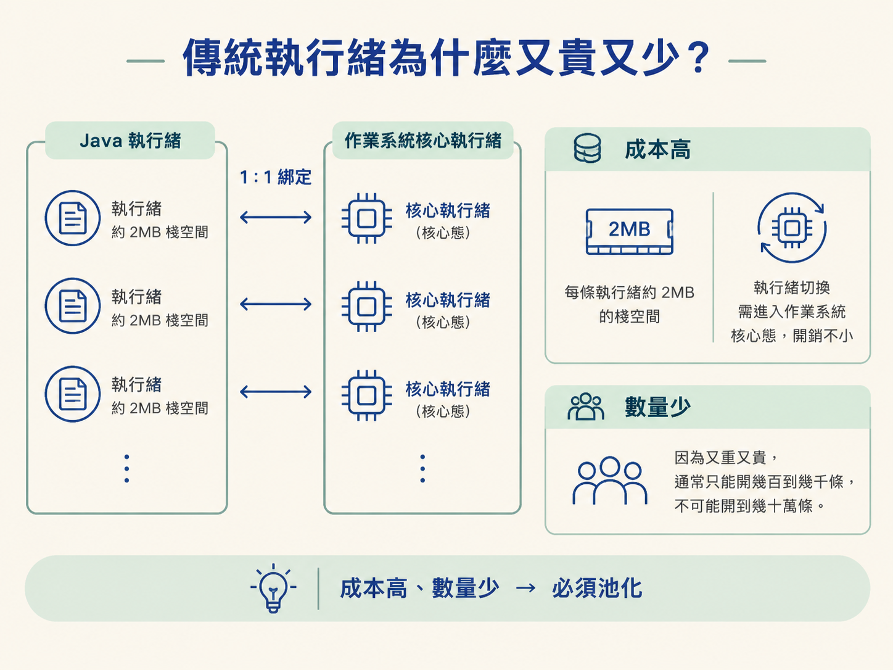
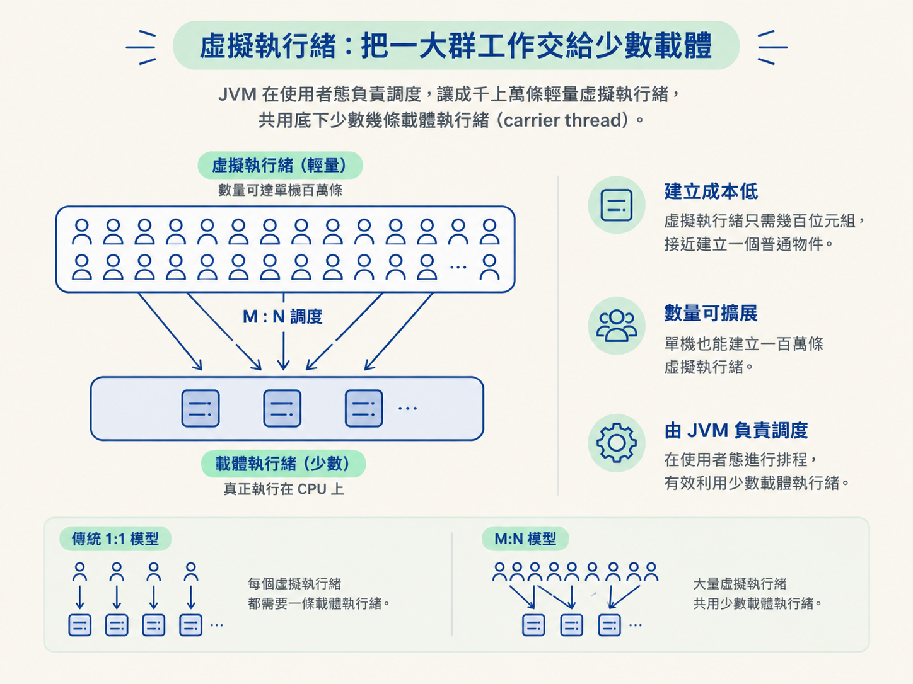
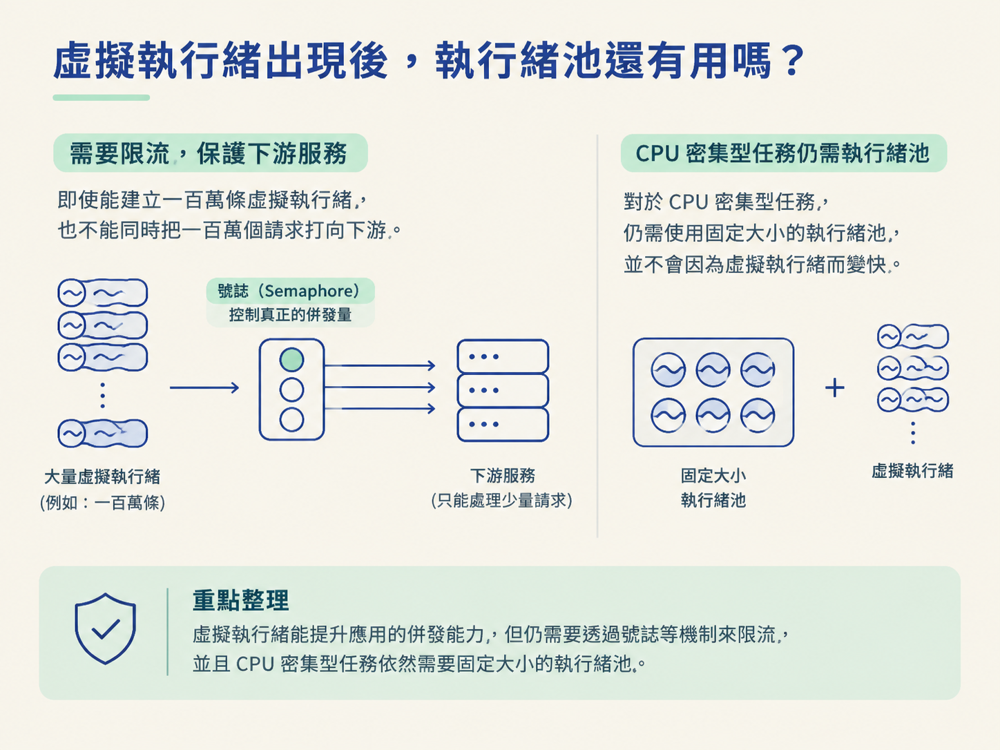

當服務流量上來時，我們常會先想到執行緒池：調整核心執行緒數、最大執行緒數、佇列容量，還要決定池子滿了之後要拒絕任務，還是讓呼叫端自己執行。這些設定看似是在調校效能，其實都在處理同一個限制：傳統執行緒太貴了，不能無限制地建立。
為了撐住更多併發，團隊有時還得改用 WebFlux、Netty 或其他非同步框架，把原本一行一行往下寫的流程拆成回調。程式雖然可能更能承受大量等待，卻也變得像把一條直線剪成很多段：流程難讀，除錯也更痛苦。
如果執行緒本身便宜到幾乎像建立普通物件一樣，還需要這麼複雜的池化與回調嗎？JDK 21 正式推出的虛擬執行緒，正是在回答這個問題。它不是把單條執行緒變快，而是重新安排「Java 執行緒和作業系統執行緒之間的關係」，讓「一個請求配一條執行緒」這種直覺的同步寫法，也能承受高併發。
你要能講清楚虛擬執行緒的 M:N 調度與阻塞卸載機制，並說明它為什麼能讓「一請求一執行緒」的同步阻塞寫法，重新具有高併發能力。
先看虛擬執行緒要解決的問題。傳統 Java Thread 和作業系統的核心執行緒是 1:1 綁定的。也就是說，你建立一條 Java 執行緒，作業系統那邊就真的要多管理一條核心執行緒。
這種綁定會帶來兩個限制。第一是成本高：一條執行緒大約需要 2MB 的棧空間，而且執行緒切換必須進入作業系統的核心態，開銷不小。第二是數量少：因為每條執行緒又重又貴，我們通常只能開幾百到幾千條，不可能毫無顧忌地開到幾十萬條。

執行緒池的整套學問，說到底就是在這種「又貴又少」的資源上做分配。池子不是因為執行緒天生適合放在一起，而是因為我們必須重複利用有限的核心執行緒，避免建立太多條。
虛擬執行緒採用的是 M:N 模型，而不是 1:1 綁定。這代表成千上萬條虛擬執行緒，可以共用底下少數幾條作業系統執行緒。
在這個模型裡，調度工作從作業系統移到 JVM。JVM 會在使用者態安排「哪一條虛擬執行緒現在要使用 CPU」，而真正承載它們執行的作業系統執行緒，稱為載體執行緒（carrier thread）。載體執行緒不需要很多，通常大約是 CPU 核心數那個量級。
因此，虛擬執行緒的建立成本可以降到幾百個位元組，接近建立一個普通物件。單機建立一百萬條虛擬執行緒，也不再是原本那種完全不敢想的事情。

| 比較項目 | 傳統執行緒 | 虛擬執行緒 |
|---|---|---|
| 與 OS 執行緒的關係 | 1:1 綁定 | M:N，多條虛擬執行緒共用少數載體執行緒 |
| 調度者 | 作業系統核心 | JVM（使用者態） |
| 建立成本 | 約 2MB 棧，開銷大 | 幾百位元組，接近建立物件 |
| 數量級 | 幾百到幾千條 | 單機可達百萬條 |
| 阻塞時的代價 | 真的掛起一條核心執行緒 | 虛擬執行緒被卸載，載體執行緒可以執行其他工作 |
虛擬執行緒真正有價值的地方，不只是「可以建立很多條」，而是它重新處理了等待這件事。
以 socket.read() 為例。傳統執行緒等網路資料時，背後的作業系統執行緒會真的被阻塞。這就像計程車司機把車停在路邊等客人：車子沒有載客，但油錢和車輛資源仍然持續被占用。當很多執行緒同時等待 I/O，大量核心執行緒就會一起閒置。
虛擬執行緒的做法不同。當它執行到阻塞操作時，JVM 會把這條虛擬執行緒從載體執行緒上「卸載」下來，放到堆記憶體中等待。載體執行緒不必跟著一起停住，而是可以立刻去執行其他還在等待處理的虛擬執行緒。
等資料回來後，JVM 再把原本的虛擬執行緒「掛載」到某條載體執行緒上，從剛才停下的位置繼續執行。載體執行緒因此能持續接手其他工作，不會因為一條虛擬執行緒正在等 I/O，就整條被綁死。
這也是虛擬執行緒特別適合大量「等 I/O」工作負載的原因：真正昂貴而數量有限的作業系統執行緒，不需要陪著每一個等待中的請求一起乾等。
這個機制帶來的最大改變，是程式設計模型可以回到比較直覺的樣子。
過去，為了讓大量請求不被阻塞，我們常被迫使用 WebFlux、Netty、CompletableFuture 等工具，把一段流程拆成多個回調。原本清楚的前後順序，被拆散到不同函式裡；程式碼一多，閱讀與除錯都會變得困難。
有了虛擬執行緒，你可以繼續使用一行一行往下寫的同步阻塞程式碼。表面上看起來，程式在等待；但在底層，虛擬執行緒等待時會從載體執行緒卸載，載體可以去處理其他工作。等結果回來，再掛載回去繼續執行。
換句話說，程式碼保留了同步流程容易理解的優點，等待期間也不必長時間占住昂貴的核心執行緒。這讓過去通常要靠響應式框架才能處理的高併發場景，有機會用更簡單的寫法完成。
有用，但用途變了。
傳統執行緒池的重要任務，是透過重複利用執行緒來節省建立成本，並用固定容量控制有限的執行緒資源。虛擬執行緒便宜到幾乎不需要靠「池化」來省建立成本，所以過去那種精算核心數、最大數的執行緒池，對虛擬執行緒來說就不再是同一種核心解法。
但是，限制併發量的需求仍然存在。假設下游服務只能同時處理幾個請求，即使虛擬執行緒可以建立一百萬條，也不能真的同時把一百萬個請求打過去。這時仍然需要使用號誌（Semaphore）等工具來限流，保護下游服務；不能只依賴執行緒池容量來控制。

另外，虛擬執行緒的優勢建立在「會阻塞等待」這件事上。若工作主要是 CPU 密集型運算，虛擬執行緒不會讓計算本身變快。這種情況下，使用固定大小的執行緒池，反而更符合 CPU 資源的限制。
傳統執行緒與作業系統執行緒 1:1 綁定，約 2MB 棧、切換昂貴，所以數量少、必須池化；虛擬執行緒改用 M:N，由 JVM 在使用者態調度，成本降到幾百位元組，單機可上百萬條。關鍵機制是阻塞卸載：遇到阻塞 I/O 時，虛擬執行緒被卸載到堆記憶體，載體執行緒立刻去跑別的虛擬執行緒，資料回來再掛載回去。這讓「一請求一執行緒」的同步阻塞寫法重新具有高併發能力，也讓複雜的響應式回調不再必要；但 CPU 密集型任務不會因此變快，限流的需求依然要靠其他工具來滿足。
到這裡，執行緒池這條線就接完整了：先從執行緒的六種狀態出發，理解為什麼需要池化，再看七個參數、四步流程、拒絕策略與 Executors 的取捨，最後看到虛擬執行緒如何改寫「一個請求配一條執行緒」的可行性。
它和前面執行緒池的關係，不是簡單的「虛擬執行緒取代所有執行緒池」，而是把問題拆成兩件事：虛擬執行緒負責用低成本承載大量等待中的任務；號誌等工具則負責控制外部資源能承受的併發量。理解這個分工，才不會把「可以建立很多條執行緒」誤解成「所有工作都應該無限制並行」。